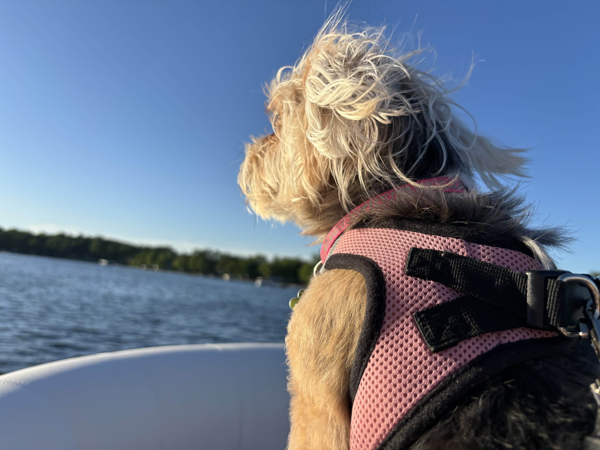
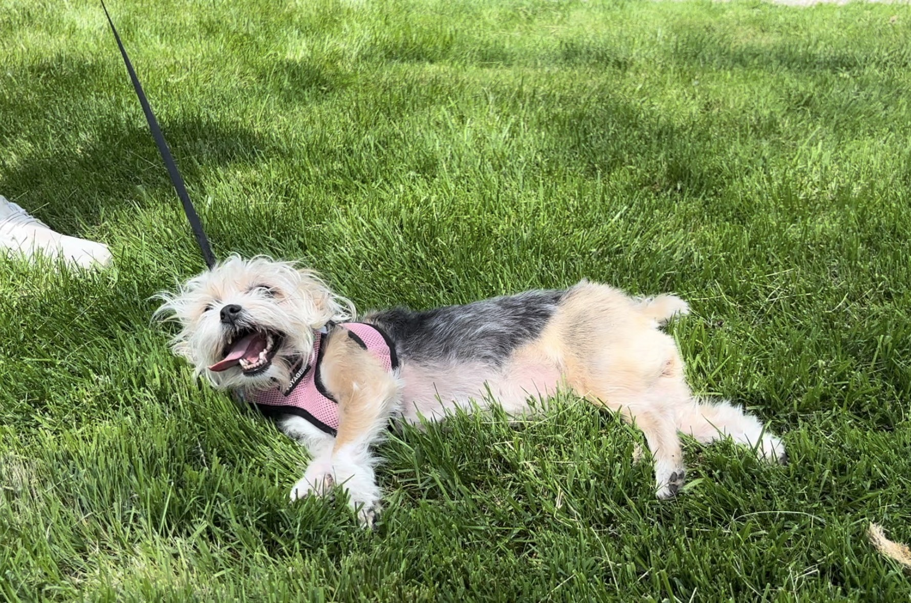

Today, Bailey went on her very first boat ride. She had a full on Titanic moment, the wind blowing in her fur as she felt like the queen of the world! Not to my surprise at all, fearless Bailey adored being on the boat. The gentle rocking of the boat didn't faze her one bit; she seemed to embrace the new experience with her usual adventurous spirit. She enjoyed watching jetskis, tubers, and other boats go by. She was also curious about the other creatures living in the water or flying above in the sky.

As the sun began to set, Bailey lay down on a soft blanket we had brought for her, contentedly watching the world go by. The golden hues of the sunset reflected in her eyes, and she let out a happy sigh, her day on the boat coming to a peaceful end. Seeing Bailey so joyful and curious reminded me of the simple pleasures in life and the joy of new experiences. It was a perfect day on the water, made even more special by having Bailey by my side. I can't wait to take her on more boat rides in the future and see what other adventures await us.
Runaway K9
This morning on Bailey’s daily walk, she got into a little mischief. At first, it was a typical walk; sniffing every tree, saying hello to the neighbors, and marking her territory. But then, a squirrel came across Bailey’s tracks and she bolted at it with all the horsepower she had. She bolted so fast that the leash slipped out of my fingertips effortlessly. As Bailey raced after the squirrel, I could only watch in astonishment as she sprinted down the path, her ears flopping wildly. After a block or so, the squirrel, quick and nimble, darted up a tree, leaving Bailey circling the trunk in frustration. I hurried after her, calling her name and hoping she wouldn't get too far.

However, catching up to Bailey soon became a simple task, as she was so exhausted from sprinting the two blocks as fast as she could. She lay in the grass with a smile which could only be described as a look of satisfaction. Bailey seemed proud that she could keep up with that squirrel for those couple blocks. Despite the chaos, it was hard to stay mad at her; Bailey’s boundless energy and curiosity always make our walks eventful and entertaining. By the time we got home, she was ready for a nap, her mischief managed for the day.